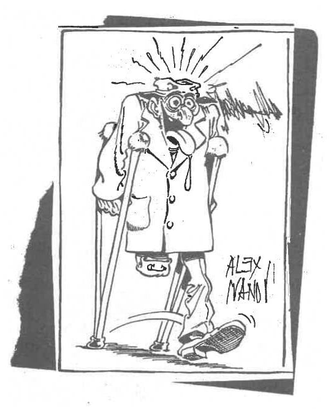

Românii cunosc două feluri de ciomăgași. De primii își mai amintesc doar gei vârstnici, întrucât făceau deliciul manifestărilor electorale în perioada interbelică, dar fuseseră, deja, inventați încă din vremea lui Nenea Iancu, altfel nu i-ar fi introdus în scena antologică din celebra lui „O scrisoare pierdută”… Rolul lor, atunci și acum, era și este cât se poate de clar, anume să-i convingă cu mijloace contondente pe onor alegătorii să voteze așa cum trebuie și nu altfel. Cel de-al doilea tip de ciomăgași a apărut în actuala campanie electorală, menirea lor fiind neschimbată. Aceștia se împart, și ei, în două subcategorii: prima este similară cu cea veche, doar că ciomăgașul României europenizate și occidentalizate a fost botezat, așa, pentru oleacă de ștaif, body guard. Astfel, chiar dacă diversele manifestații cu mititei, bere și manele se fac, precum revoluțiunea, cu voie de la polițiune, pentru contramanifestații sau, din contra, pentru protecția celor care se manifestă, geambașii de consilieri, primari, și șefi de consilii județene apelează la o firmă de pază. Nu altfel vor proceda, ceva mai târziu, alți geambași, mult mai tari, căci producția muncii lor constă în parlamentari și miniștri, premiul cel mare fiind ocuparea fostului palat regal și al pionierilor și șoimilor patriei de la Cotroceni pentru un termen de cinci ani. Încontrările de pe terenul localelor s-au lăsat, de la declanșarea actualei campanii, cu ceva capete sparte și membre (nu de partid, ci mâini și picioare) cotonogite în numele politichiei, dar programele de tembeliziune sunt în așteptare de chestii mai tari, măcar doi-trei morți, acolo, că altfel bășcălia națională își pierde audiența la fanii lui Adrian Minune.

Cum o iei, cum n-o iei, nu genul de ciomăgași care au produs amintitele dovezi de vitejie pentru combatanți este cel mai primejdios, ci al doilea. Acesta este reprezentat de șefii cei mari, de păpușarii comediei care îl face pe Caragiale mai actual ca oricând. Pe ei n-o să-i vedem dând cu parul în mulțime, nu de alta, dar și-ar șifona costumele de firmă pentru care se plătește leafa pe un an și ceva a unui muncitor. Ciomagul lor este mai subtil, căci este constituit de limba otrăvită și bine împănată cu minciuni pe sfert credibile pe care le difuzează, la ore de vârf și de maximă audiență, pe toate canalele de intoxicare în masă. Comicul, la fel de tragic precum la același Caragiale, nu mai vine din limbaj ori din acțiune, ci din strădania de a-și polei cumva mitocănia cu maniere prost însușite în timpul vacanțelor din paradisurile exotice sau în vizitele oficiale în care au copiat cu sârg comportamentul valeților de la casele regale. Folosirea cuvântului „tragic” nu este întâmplătoare. Nu deranjează atât modul de a vorbi și a se mișca al unora evident mai obișnuiți să bea coniacul fin cu litra prin barurile de noapte asezonate cu pipițe ușor consumabile din Capitala noastră iubită, cât faptul că, indiferent cine câștigă, marele furt național va continua la adăpostul complicității grupurilor de interese ce nu țin cont de diferențele de partid. Români, fiți fericiți cu noi, numai cu noi, ne zic ei, iar nu mai departe decât mâine nu vom mai plăti doi euro și jumătate pentru litrul de ulei, ci trei, pentru că aceia care ne fericesc cu prețul foamei noastre trebuie să-și scoată pârleala cumva. În plus, mai au și altele, cum ar fi bordurile inestetice ale lui Videanu, care trebuie schimbate, drumurile, șoselele și podurile, autostrăzile ce vor fi circulate în secolul viitor, noile aeroporturi de pe care se va decola în același secol, zonele rezidențiale din extravilan, viitoarele contracte de furnizare a energiei, impozitele pe circulația mașinilor și a sângelui, taxele pe sexul legal sau ilegal, birurile pe mersul pe jos, etc… În rest, vorba cântecului, „avem di tăti” și ce mai vot inconștienții aceia cărora, iată, încă le mai pasă de ce se întâmplă cu țara lor, câtă mai e a lor, și se roagă la Cel de Sus să lumineze acest popor mințit și să-l apere de pecinginea care îl copleșește. Din nefericire, doar rugăciunea nu ajunge, trebuie să mai și facem ceva, Ajută-ne, Doamne, să vedem ce!